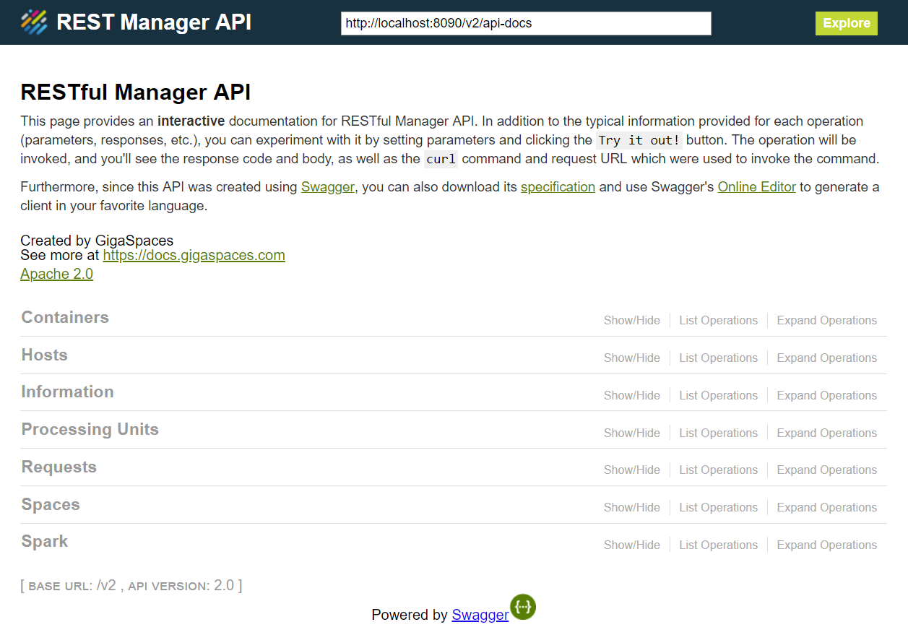

The
To begin, start a standalone
./gs-agent.sh --manager-local
gs-agent.bat --manager-local
After the
You must start a
The REST Manager API was built with Swagger. Swagger provides typical information for each operation (parameters, responses, etc.). In addition, you can experiment with it by setting parameters and clicking the Try it out! button from within the documentation. This invokes the operation, and you can see the response code and body, as well as the curl command and request URL that were used to invoke the command. If you are familiar with the older Admin API, most of this is self explanatory. You can also download the yaml specification and use Swagger's Online Editor to generate a client in your favorite language.

In the Admin API, long-running operations (for example, deploy and undeploy) are asynchronous with no future or callback. You can either track progress manually, or use various ‘andWait’ overloads (for example, deployAndWait). The REST Manager API cannot use andWait so you must poll for completion, but each such operation behaves differently.
Instead, the REST Manager API contains Request functionality. Each long-running operation creates a request and returns its ID, so you can poll on the request ID and check the status (running/successful/failed). The request exposes additional useful information:
By default, the system keeps up to 100,000 completed requests (configurable), and purges the oldest as needed.
Deploying a Processing Unit requires uploading a resource (JAR/WAR/ZIP) to the
This also means that when you undeploy a Processing Unit, the resource does not get deleted. If you want to delete it you must execute a separate REST operation (if you want to undeploy/redeploy with the same JAR. there’s no need to remove it). Currently you cannot delete/replace a JAR file if a deployed Processing Unit is using it.
The REST component is part of the
For more information about using the REST Manager API with security, refer to REST Manager API - Security section.
You can perform a wide variety of operations on all of the environment components listed below. The available operations, request parameters and URLs are listed on each relevant page of the local
You must start a
You can download the yaml configuration file from http://localhost:8090/v2/xap-manager-api.yaml
and import or copy and past the yaml content into the Swagger Editor.
From the Swagger user interface, you can generate client code in your preferred language: